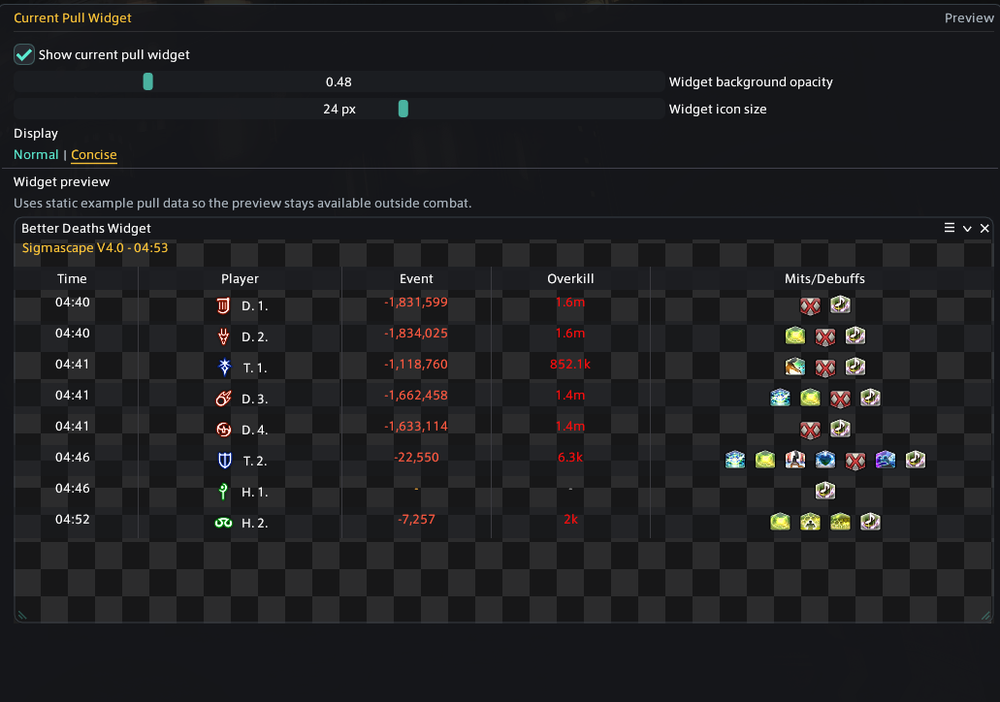
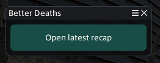

The widget is a separate window that stays visible over gameplay. It follows the active pull and adds each recorded death to a compact, chronological table.
What the table shows
TitleShows Current pull, the duty name, and pull timer. After a wipe or reset, it changes to Last Pull Review and includes the saved pull number when available.
TimeThe pull timer when each death occurred. Rows remain ordered from the earliest death to the latest.
PlayerJob icon and captured or redacted name. Concise mode uses initials. Hover for the available full-name and initials context.
EventThe fatal event and damage. Multi-hit deaths are combined into a hit count and total damage; hover the entry for the individual fatal events.
OverkillA compact overkill value such as 186.9k, Exact for an exactly lethal hit, or Non-hit KO when the captured hit was not itself lethal. Hover for exact damage, HP, shield, and overkill values.
Mits/DebuffsCaptured player mitigation and debuffs plus boss damage-down effects associated with the death. Hover an icon for its name, source, stacks, and remaining time when available.
Display modes
Normal
Shows player names, fatal-event wording and damage, and all mitigation/debuff icons. Icons wrap to additional rows when the column needs more room.
Concise
Uses player initials and damage-only event summaries. It fits as many status icons as the column allows, then shows +x; hover that count to see the hidden icons.
Opening and positioning it
Show itEnable Widgets > Death Widget > Show death widget, or toggle it with /bdwidget or /betterdeathswidget.
Move itDrag the Better Deaths Widget title bar to place it over your game UI.
Resize itDrag either lower corner. Content stays inside the window and can be scrolled when the table is taller than the available space.
Close itClosing the separate widget window also turns off its Show death widget setting.
No deaths yetThe widget remains available and shows that no deaths have been recorded for the pull.
After the pullLast Pull Review keeps the most recently completed wipe or reset visible until the next duty pull begins.
Widget settings and preview
Options contains a background-opacity slider that changes only the window background, an independent 12–32 px widget icon-size control, and the Normal/Concise selector. The static preview uses example pull data, so you can adjust the widget outside combat. The global scrollbar option changes whether its scrollbar is drawn; mouse-wheel scrolling still works when the scrollbar is hidden.

The example preview uses the same compact table as the live widget.
The widget is a quick summary
It does not replace Review. Open the recorded pull when you need the complete fatal sequence, lead-up timeline, HP history, What-if calculation, or Replay.
Death recap popup
The death recap popup is separate from the widget. It is an optional local button that appears after your own death and opens that exact death in Review. It normally lasts 30 seconds; Options can keep it visible in duties or everywhere.

The popup opens the latest available personal death recap.